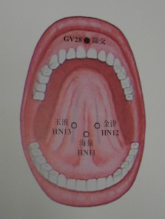
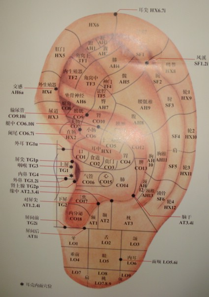
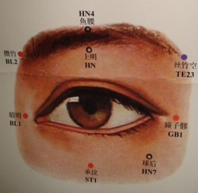

(continuation)
| GO TO PAGE 4 OF 9 | BACK TO DATE PAGE | |||||||||||||||
| Fish At The Doctor (continuation) |
||||||||||||||||
|  | ||||||||||||||||
|  | ||||||||||||||||
| As difficult as it is for us to accept, accupuncture can also be used as an anesthesia. One internet listing says that certain Chinese hospitals routinely use accupuncture as the only pain-killer during major surgery. Reportedly patients remain awake throughout surgery and even drink tea or eat fruit to pass the time. | ||||||||||||||||
|  | ||||||||||||||||
| GO TO PAGE 4 OF 9 | BACK TO DATE PAGE | |||||||||||||||